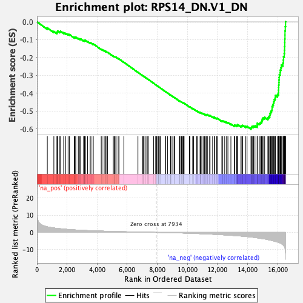

| | | Dataset | DE_genes2 |
| Phenotype | NoPhenotypeAvailable |
| Upregulated in class | na_neg |
| GeneSet | RPS14_DN.V1_DN |
| Enrichment Score (ES) | -0.6018972 |
| Normalized Enrichment Score (NES) | -2.0044148 |
| Nominal p-value | 0.0 |
| FDR q-value | 0.0 |
| FWER p-Value | 0.0 |
Table: GSEA Results Summary

Fig 1: Enrichment plot: RPS14_DN.V1_DN
Profile of the Running ES Score & Positions of GeneSet Members on the Rank Ordered List
| PROBE | GENE SYMBOL | GENE_TITLE | RANK IN GENE LIST | RANK METRIC SCORE | RUNNING ES | CORE ENRICHMENT | | 1 | TUBB2A | | | 689 | 3.220 | -0.0341 | No |
| 2 | SRD5A3 | | | 1123 | 2.573 | -0.0541 | No |
| 3 | PCSK7 | | | 1324 | 2.331 | -0.0606 | No |
| 4 | SPHK1 | | | 1353 | 2.315 | -0.0565 | No |
| 5 | APOBEC3A | | | 1370 | 2.294 | -0.0518 | No |
| 6 | RPS28 | | | 1520 | 2.160 | -0.0555 | No |
| 7 | CNN3 | | | 1571 | 2.112 | -0.0533 | No |
| 8 | IL15RA | | | 1774 | 1.937 | -0.0608 | No |
| 9 | ZNHIT2 | | | 1907 | 1.834 | -0.0643 | No |
| 10 | ISOC2 | | | 2069 | 1.704 | -0.0699 | No |
| 11 | RAP1GAP | | | 2161 | 1.643 | -0.0714 | No |
| 12 | DGCR11 | | | 2477 | 1.456 | -0.0870 | No |
| 13 | BAG3 | | | 2525 | 1.429 | -0.0863 | No |
| 14 | IL7 | | | 2577 | 1.400 | -0.0860 | No |
| 15 | TLX2 | | | 2749 | 1.308 | -0.0932 | No |
| 16 | ID1 | | | 2845 | 1.266 | -0.0958 | No |
| 17 | RASIP1 | | | 2895 | 1.243 | -0.0957 | No |
| 18 | PC | | | 3098 | 1.155 | -0.1052 | No |
| 19 | EPB41 | | | 3156 | 1.131 | -0.1058 | No |
| 20 | ZNF74 | | | 3168 | 1.125 | -0.1037 | No |
| 21 | REPS2 | | | 3223 | 1.103 | -0.1043 | No |
| 22 | SH3TC2 | | | 3365 | 1.052 | -0.1103 | No |
| 23 | CLCN4 | | | 3529 | 0.996 | -0.1178 | No |
| 24 | SIRT4 | | | 3586 | 0.976 | -0.1187 | No |
| 25 | THEM6 | | | 3725 | 0.922 | -0.1249 | No |
| 26 | ALAD | | | 3741 | 0.916 | -0.1235 | No |
| 27 | ERCC2 | | | 4271 | 0.758 | -0.1540 | No |
| 28 | PCOLCE | | | 4320 | 0.744 | -0.1550 | No |
| 29 | NEFH | | | 4468 | 0.702 | -0.1623 | No |
| 30 | ENG | | | 4544 | 0.679 | -0.1652 | No |
| 31 | AGFG2 | | | 4591 | 0.663 | -0.1663 | No |
| 32 | ELMO3 | | | 4694 | 0.639 | -0.1710 | No |
| 33 | DNAJA4 | | | 5069 | 0.552 | -0.1924 | No |
| 34 | TRIM29 | | | 5125 | 0.537 | -0.1945 | No |
| 35 | STEAP3 | | | 5182 | 0.524 | -0.1966 | No |
| 36 | CHST5 | | | 5245 | 0.506 | -0.1991 | No |
| 37 | MYLIP | | | 5259 | 0.503 | -0.1987 | No |
| 38 | ADGRA3 | | | 5398 | 0.470 | -0.2059 | No |
| 39 | LARS2 | | | 5455 | 0.459 | -0.2082 | No |
| 40 | USP5 | | | 5773 | 0.390 | -0.2266 | No |
| 41 | RPUSD2 | | | 6711 | 0.200 | -0.2833 | No |
| 42 | TPRA1 | | | 7028 | 0.150 | -0.3023 | No |
| 43 | EMP2 | | | 7078 | 0.139 | -0.3049 | No |
| 44 | MACROD1 | | | 7116 | 0.131 | -0.3069 | No |
| 45 | SLC6A8 | | | 7243 | 0.108 | -0.3143 | No |
| 46 | FICD | | | 7334 | 0.092 | -0.3196 | No |
| 47 | ZC2HC1C | | | 7386 | 0.082 | -0.3225 | No |
| 48 | EYA3 | | | 7392 | 0.082 | -0.3226 | No |
| 49 | SLC29A2 | | | 7755 | 0.024 | -0.3446 | No |
| 50 | TGM2 | | | 7888 | 0.006 | -0.3527 | No |
| 51 | TUBG1 | | | 7955 | -0.003 | -0.3567 | No |
| 52 | GCDH | | | 8030 | -0.016 | -0.3612 | No |
| 53 | B3GALNT1 | | | 8088 | -0.025 | -0.3646 | No |
| 54 | KRT13 | | | 8091 | -0.025 | -0.3647 | No |
| 55 | SLC31A1 | | | 8175 | -0.038 | -0.3697 | No |
| 56 | CA3 | | | 8221 | -0.046 | -0.3723 | No |
| 57 | DOCK9 | | | 8546 | -0.101 | -0.3918 | No |
| 58 | KANK2 | | | 8555 | -0.103 | -0.3921 | No |
| 59 | EPCAM | | | 8682 | -0.126 | -0.3995 | No |
| 60 | MAMLD1 | | | 8871 | -0.165 | -0.4105 | No |
| 61 | KLHL7 | | | 8885 | -0.168 | -0.4109 | No |
| 62 | MRPS2 | | | 8979 | -0.188 | -0.4161 | No |
| 63 | TUBB2B | | | 9110 | -0.216 | -0.4235 | No |
| 64 | SLC29A1 | | | 9162 | -0.229 | -0.4261 | No |
| 65 | BYSL | | | 9473 | -0.306 | -0.4442 | No |
| 66 | GSTA4 | | | 9487 | -0.311 | -0.4443 | No |
| 67 | CDR2 | | | 9560 | -0.328 | -0.4478 | No |
| 68 | S100A3 | | | 9606 | -0.341 | -0.4498 | No |
| 69 | CHAC1 | | | 9688 | -0.365 | -0.4538 | No |
| 70 | FZD5 | | | 9729 | -0.377 | -0.4553 | No |
| 71 | AOC2 | | | 9744 | -0.383 | -0.4552 | No |
| 72 | TBRG4 | | | 9778 | -0.393 | -0.4562 | No |
| 73 | EIF2B3 | | | 10127 | -0.499 | -0.4763 | No |
| 74 | MYO19 | | | 10169 | -0.515 | -0.4775 | No |
| 75 | SRR | | | 10348 | -0.567 | -0.4869 | No |
| 76 | KCTD20 | | | 10412 | -0.590 | -0.4893 | No |
| 77 | LGR4 | | | 10616 | -0.668 | -0.5001 | No |
| 78 | MRPL12 | | | 10668 | -0.683 | -0.5015 | No |
| 79 | GEMIN4 | | | 10838 | -0.739 | -0.5100 | No |
| 80 | SLC25A21 | | | 10853 | -0.742 | -0.5090 | No |
| 81 | LRRC20 | | | 10908 | -0.769 | -0.5104 | No |
| 82 | MIPEP | | | 10966 | -0.788 | -0.5119 | No |
| 83 | TUBGCP4 | | | 11074 | -0.833 | -0.5164 | No |
| 84 | GATC | | | 11139 | -0.856 | -0.5181 | No |
| 85 | SPTB | | | 11227 | -0.892 | -0.5212 | No |
| 86 | AGAP1 | | | 11282 | -0.918 | -0.5222 | No |
| 87 | CRMP1 | | | 11287 | -0.921 | -0.5202 | No |
| 88 | HGH1 | | | 11325 | -0.936 | -0.5201 | No |
| 89 | PES1 | | | 11474 | -0.997 | -0.5267 | No |
| 90 | SRM | | | 11503 | -1.004 | -0.5259 | No |
| 91 | COBLL1 | | | 11674 | -1.077 | -0.5336 | No |
| 92 | DDN | | | 11782 | -1.122 | -0.5374 | No |
| 93 | C14orf132 | | | 11798 | -1.133 | -0.5354 | No |
| 94 | NMU | | | 11938 | -1.191 | -0.5410 | No |
| 95 | GAL | | | 11978 | -1.208 | -0.5404 | No |
| 96 | NLE1 | | | 12287 | -1.367 | -0.5558 | No |
| 97 | MRTO4 | | | 12329 | -1.392 | -0.5548 | No |
| 98 | CAD | | | 12452 | -1.451 | -0.5587 | No |
| 99 | IPO4 | | | 12577 | -1.523 | -0.5624 | No |
| 100 | E2F8 | | | 12689 | -1.584 | -0.5653 | No |
| 101 | CBS | | | 12888 | -1.707 | -0.5731 | No |
| 102 | POLD1 | | | 13115 | -1.833 | -0.5824 | No |
| 103 | PYCR1 | | | 13138 | -1.849 | -0.5791 | No |
| 104 | CD320 | | | 13269 | -1.936 | -0.5822 | No |
| 105 | DYRK3 | | | 13313 | -1.963 | -0.5800 | No |
| 106 | NID2 | | | 13327 | -1.971 | -0.5759 | No |
| 107 | GTF2H4 | | | 13553 | -2.134 | -0.5843 | No |
| 108 | NUP155 | | | 13614 | -2.172 | -0.5826 | No |
| 109 | TLN2 | | | 13675 | -2.220 | -0.5807 | No |
| 110 | MCM5 | | | 13861 | -2.378 | -0.5861 | No |
| 111 | INCENP | | | 13962 | -2.468 | -0.5861 | No |
| 112 | KIF20A | | | 14222 | -2.716 | -0.5951 | Yes |
| 113 | ESPL1 | | | 14262 | -2.749 | -0.5907 | Yes |
| 114 | RRS1 | | | 14305 | -2.785 | -0.5863 | Yes |
| 115 | BCAT1 | | | 14397 | -2.877 | -0.5847 | Yes |
| 116 | NDC1 | | | 14488 | -2.975 | -0.5828 | Yes |
| 117 | LLPH | | | 14630 | -3.161 | -0.5836 | Yes |
| 118 | RGS5 | | | 14640 | -3.175 | -0.5762 | Yes |
| 119 | SLC43A1 | | | 14642 | -3.177 | -0.5684 | Yes |
| 120 | MYH10 | | | 14778 | -3.335 | -0.5683 | Yes |
| 121 | HMGN5 | | | 14860 | -3.438 | -0.5647 | Yes |
| 122 | CDCA3 | | | 14921 | -3.539 | -0.5596 | Yes |
| 123 | ASNS | | | 14954 | -3.574 | -0.5526 | Yes |
| 124 | MSH2 | | | 14972 | -3.606 | -0.5447 | Yes |
| 125 | GPATCH4 | | | 15025 | -3.685 | -0.5387 | Yes |
| 126 | SUV39H2 | | | 15132 | -3.824 | -0.5357 | Yes |
| 127 | TK1 | | | 15344 | -4.187 | -0.5381 | Yes |
| 128 | CDC20 | | | 15404 | -4.309 | -0.5310 | Yes |
| 129 | PSAT1 | | | 15468 | -4.426 | -0.5239 | Yes |
| 130 | MYBL2 | | | 15492 | -4.462 | -0.5142 | Yes |
| 131 | TRIP13 | | | 15527 | -4.544 | -0.5049 | Yes |
| 132 | ZWILCH | | | 15582 | -4.659 | -0.4966 | Yes |
| 133 | PLK1 | | | 15623 | -4.763 | -0.4872 | Yes |
| 134 | CYBRD1 | | | 15624 | -4.766 | -0.4754 | Yes |
| 135 | NOC3L | | | 15676 | -4.864 | -0.4664 | Yes |
| 136 | MTPAP | | | 15712 | -4.937 | -0.4562 | Yes |
| 137 | BAG2 | | | 15742 | -4.998 | -0.4456 | Yes |
| 138 | ORC1 | | | 15778 | -5.075 | -0.4351 | Yes |
| 139 | CCNB2 | | | 15832 | -5.225 | -0.4253 | Yes |
| 140 | NCAPH | | | 15843 | -5.247 | -0.4129 | Yes |
| 141 | PRMT3 | | | 15985 | -5.624 | -0.4075 | Yes |
| 142 | TWISTNB | | | 16051 | -5.815 | -0.3970 | Yes |
| 143 | APOOL | | | 16054 | -5.824 | -0.3826 | Yes |
| 144 | KIF2C | | | 16061 | -5.848 | -0.3684 | Yes |
| 145 | ATAD2 | | | 16065 | -5.853 | -0.3541 | Yes |
| 146 | ECT2 | | | 16082 | -5.906 | -0.3403 | Yes |
| 147 | MDM4 | | | 16085 | -5.918 | -0.3257 | Yes |
| 148 | GUF1 | | | 16095 | -5.936 | -0.3115 | Yes |
| 149 | PRC1 | | | 16103 | -5.960 | -0.2971 | Yes |
| 150 | ERCC6L | | | 16159 | -6.148 | -0.2852 | Yes |
| 151 | FBXO5 | | | 16169 | -6.210 | -0.2703 | Yes |
| 152 | GINS2 | | | 16213 | -6.392 | -0.2570 | Yes |
| 153 | MANEA | | | 16241 | -6.514 | -0.2424 | Yes |
| 154 | KIF23 | | | 16347 | -7.203 | -0.2309 | Yes |
| 155 | CDC6 | | | 16375 | -7.439 | -0.2141 | Yes |
| 156 | EXO1 | | | 16387 | -7.570 | -0.1959 | Yes |
| 157 | SHMT1 | | | 16433 | -8.053 | -0.1786 | Yes |
| 158 | KIF15 | | | 16449 | -8.254 | -0.1590 | Yes |
| 159 | PBK | | | 16458 | -8.487 | -0.1384 | Yes |
| 160 | ARHGAP11A | | | 16467 | -8.620 | -0.1174 | Yes |
| 161 | MCM10 | | | 16471 | -8.676 | -0.0960 | Yes |
| 162 | DLGAP5 | | | 16482 | -9.145 | -0.0738 | Yes |
| 163 | MKI67 | | | 16483 | -9.193 | -0.0510 | Yes |
| 164 | CENPE | | | 16501 | -10.010 | -0.0271 | Yes |
| 165 | DEPDC1 | | | 16522 | -11.603 | 0.0005 | Yes |
Table: GSEA details [plain text format]
Fig 2: RPS14_DN.V1_DN: Random ES distribution
Gene set null distribution of ES for RPS14_DN.V1_DN